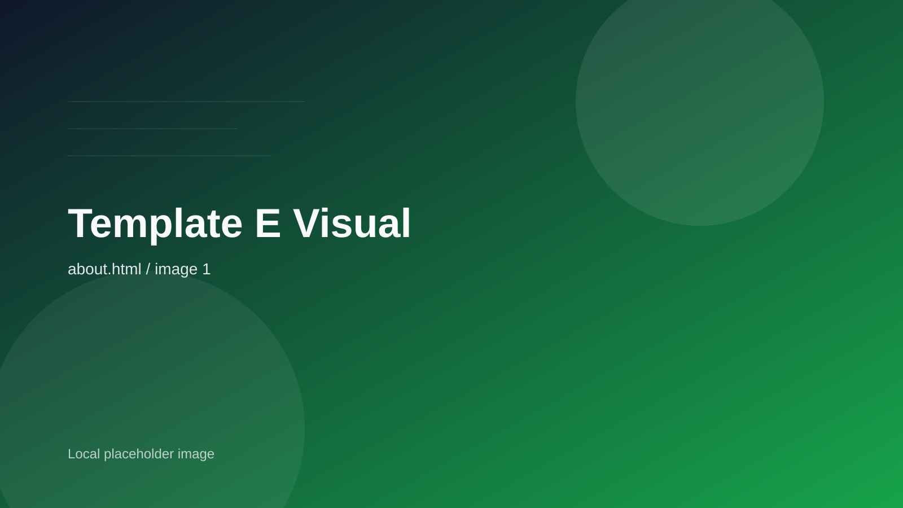

Regenerative Brand Design
ブランドの存在意義、調達姿勢、世界観、コピーを再設計し、自然との一貫性を作ります。
- ブランドポジション再定義
- メッセージ設計 / 撮影ディレクション
- EC・店舗体験の統一
Services
商品・包装・販売体験・運用フローまで、 一連の接点をつなぎ直しながら サステナブルな事業へ更新します。
ブランドの存在意義、調達姿勢、世界観、コピーを再設計し、自然との一貫性を作ります。
パッケージ素材の見直しだけでなく、回収導線や運用ルールまで含めて設計します。
オンラインとオフラインを横断しながら、継続しやすいエコ体験を構築します。
Process
Step 1
調達・商品・販促・回収の現状を棚卸しし、改善の優先順位を決めます。
Step 2
理想論に偏らず、現場に載るラインまで要件を整理して試作します。
Step 3
数値モニタリングと改善会議を通じて、継続的に成果へつなげます。

Advisory Format
2週間で改善優先度を整理する短期診断。
新商品や新導線の設計と試作を一気に進める集中支援。
KPI と実装を継続改善する伴走型のアドバイザリー。